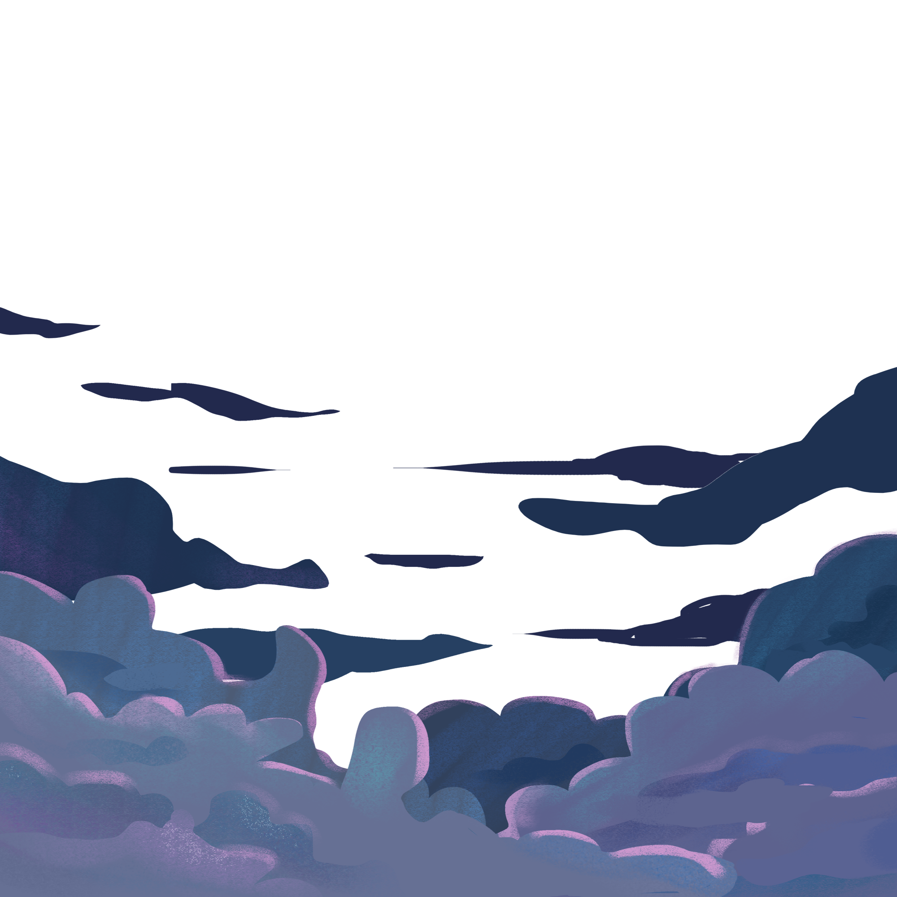
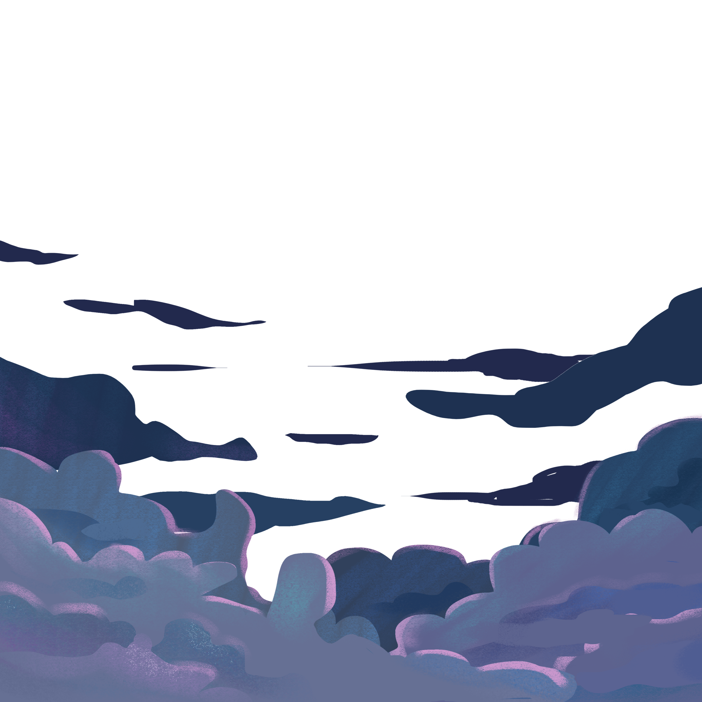

Presented by:
Nadiyya Hasaniyyah
 


—Sandi sisipan merupakan salah satu bentuk komunikasi yang digunakan di dalam bidang kepramukaan sebagai sarana komunikasi secara rahasia, maupun dalam keadaan darurat dan juga sebagai informasi rahasia. Makalah ini akan membahas penggunaan algoritma Brute Force, Recursive dan Boyer Moore dalam menerjemahkan Sandi Sisipan. Algoritma Brute Force adalah pendekatan sederhana yang mencoba semua kemungkinan kombinasi sandi secara berurutan. Algoritma Recursive menggunakan pendekatan pemecahan masalah dengan membagi sandi menjadi submasalah yang lebih kecil dan memecahkannya secara berulang. Algoritma Boyer Moore memanfaatkan pola-pola dalam sandi untuk mengurangi jumlah perbandingan yang harus dilakukan.
Sandi sisipan merupakan salah satu bentuk komunikasi yang digunakan di dalam bidang kepramukaan sebagai sarana komunikasi secara rahasia, maupun dalam keadaan darurat dan juga sebagai informasi rahasia. Sandi sisipan merupakan penulisan sandi yang diselipi huruf lain.Sandi sisipan merupakan penulisan sandi yang diselipi huruf lain. Yang biasanya digunakan adalah tiga huruf AND. Untuk membaca sandi ini, abaikan tiga huruf tersebut.
Teks: Anda kandu pander gandi dandu landu andan yanda
Arti dari pesan tersebut adalah “Akupergiduluanya”, ketika diuraikan perkata dalam bahasa Indonesia maka dibaca “Aku pergi duluan ya”.
Algoritma Brute Force adalah pendekatan yang lempang (straightforward) untuk memecahkan suatu persoalan, biasanya didasarkan pada pernyataan masalah (problem statement) dan definisi konsep yang dilibatkan. Algoritma Brute Force memecahkan masalah dengan sangat sederhana, langsung dan dengan cara yang jelas. Agoritma Brute Force umumnya tidak “cerdas” dan tidak mangkus, karena ia membutuhkan jumlah komputasi yang besar dan waktu yang lama dalam penyelesaiannya. Kata “force” mengindikasikan “tenaga” ketimbang “otak”.Algoritma Brute Force lebih cocok untuk persoalan yang berukuran kecil.
Sebuah objek dikatakan rekursif (recursive) jika ia didefinisikan dalam terminologi dirinya sendiri. Proses mendefinisikan objek dalam terminologi dirinya sendiri disebut rekursi (recursion) Fungsi rekursif didefinisikan oleh dua bagian: Basis, Bagian yang berisi nilai fungsi yang terdefinisi secara eksplisit. Bagian ini juga sekaligus menghentikan rekursif (dan memberikan sebuah nilai yang terdefinisi pada fungsi rekursif). Rekurens, Bagian ini mendefinisikan fungsi dalam terminologi dirinya sendiri. Berisi kaidah untuk menemukan nilai fungsi pada suatu input dari nilai-nilai lainnya pada input yang lebih kecil
Algoritma Boyer Moore adalah salah satu algoritma untuk mencari suatu string di dalam teks, dibuat oleh R.M Boyer dan J.S Moore. Ide utama algoritma ini adalah mencari string dengan melakukan pembandingan karakter mulai dari karakter paling kanan dari string yang dicari. Dengan mengunakan algoritma ini, secara rata-rata proses pencarian akan menjadi lebih cepat jika dibandingakan dengan algoritma lainnya. alasan melakukan pencocokan dari kanan (posisi terakhir string yang dicari)